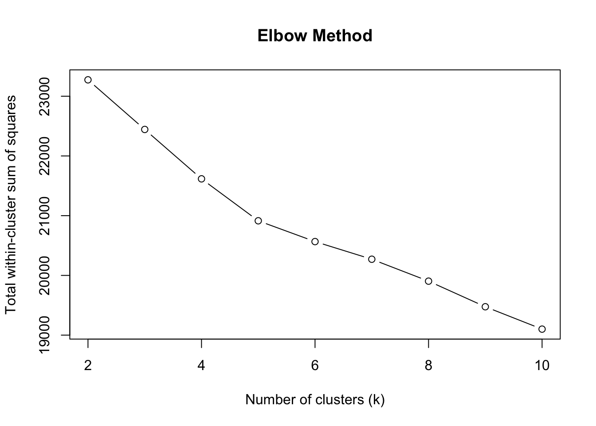
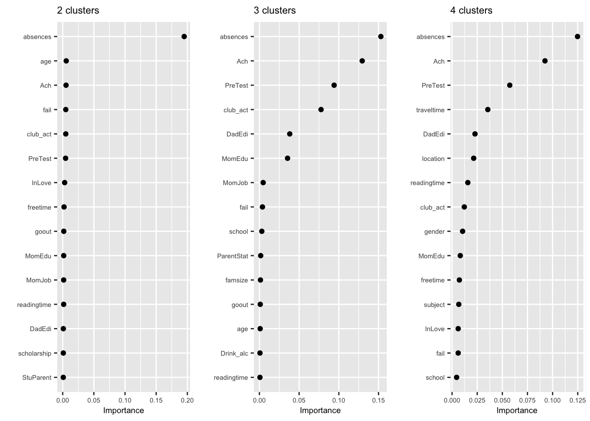
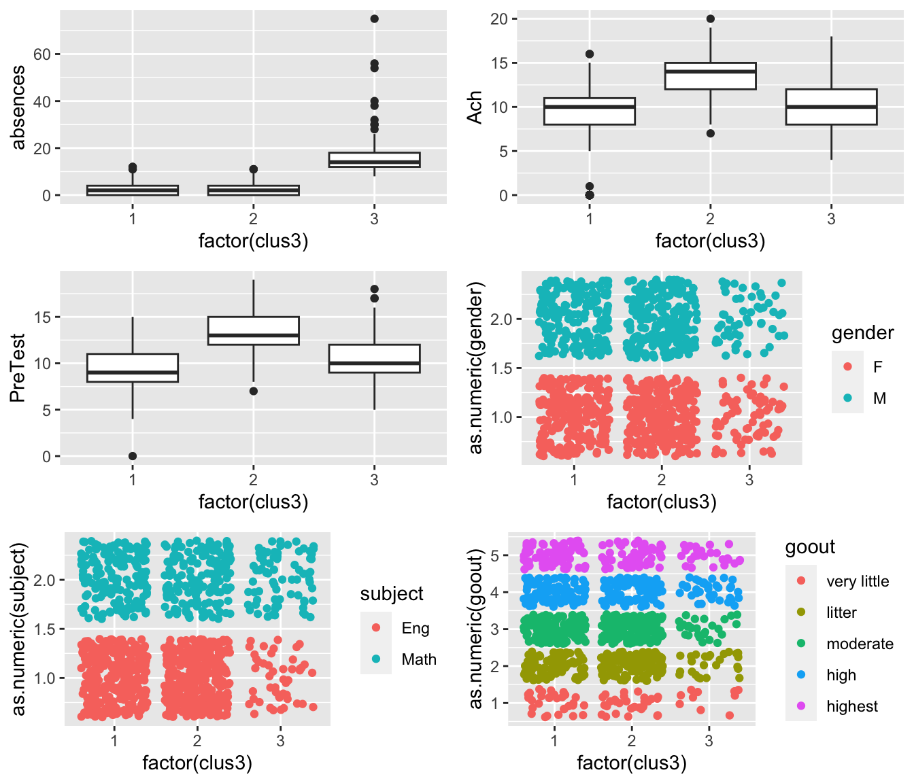
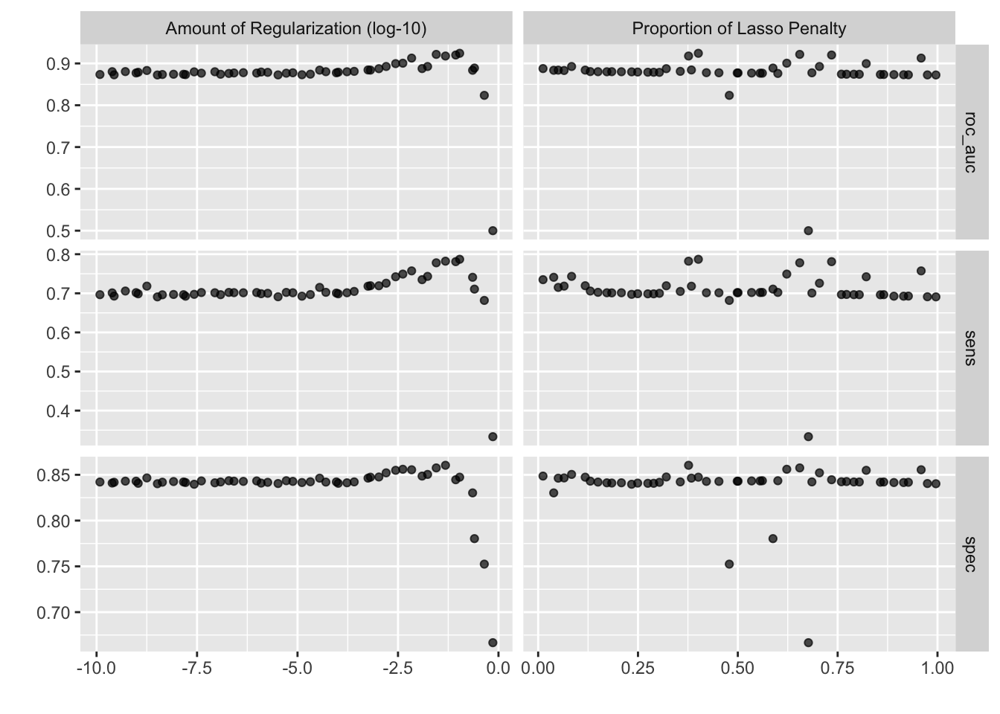
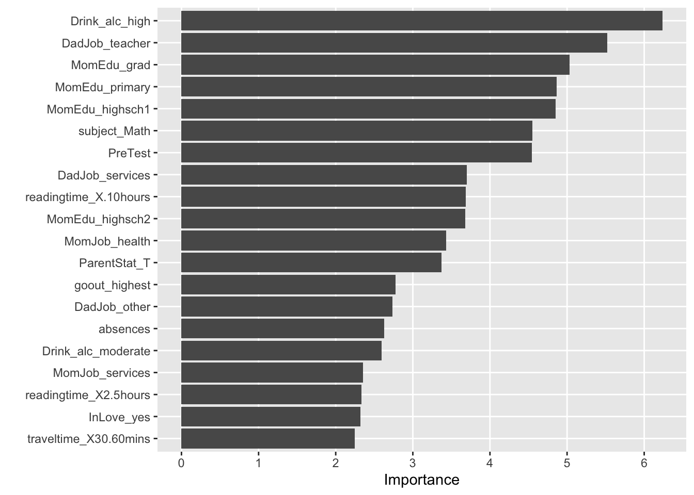

library(tidyverse)
dat1<-read.csv("Math_miss.csv")
dat2<-read.csv("Eng_miss.csv")Midterm Examination
สถานการณ์
จงใช้สถานการณ์ที่กำหนดให้เพื่อตอบคำถาม
สมมุติว่าหน่วยงานทางการศึกษาแห่งหนึ่งได้มาขอคำปรึกษากับนิสิตเกี่ยวกับการใช้ประโยชน์จากฐานข้อมูลนักเรียนของหน่วยงาน ฐานข้อมูลดังกล่าวประกอบด้วยข้อมูลด้านภูมิหลัง พฤติกรรมการเรียนรู้และผลการเรียนของนักเรียนในรายวิชา คณิตศาสตร์ และภาษาอังกฤษ ทั้งนี้หน่วยงานได้ export ชุดข้อมูลออกมาเป็นไฟล์ CSV
1.1 นำชุดข้อมูลเข้าและสำรวจข้อมูลเบื้องต้น
สำรวจชุดข้อมูลเบื้องต้น พบว่าข้อมูลทั้งสองชุดเก็บข้อมูลของตัวแปรเดียวกัน (ลองเขียนคำสั่ง table(names(dat1)==names(dat2))ส่วนที่แตกต่างกันคือคะแนน PreTest และ Ach ที่เป็นความรู้พื้นฐานและผลสัมฤทธิ์ทางการเรียนคนละรายวิชากัน
คราวนี้มาพิจารณาตัวแปรภายในชุดข้อมูล จะเห็นว่าสามารถจัดกลุ่มตัวแปร โดยใช้บริบทของข้อมูลเป็นเกณฑ์ดังนี้
| กลุ่ม | ตัวแปร |
|
|
|
|
|
|
|
|
1.2 รวมชุดข้อมูลเข้าด้วยกัน
ความรู้พื้นฐานและผลสัมฤทธิ์ในรายวิชา Math และ Eng ไม่เหมือนกันดังนั้นต้องสร้างตัวแปรใหม่อีกตัวเพื่อแยกคะแนนของรายวิชาทั้งสอง ดังนี้
dat1$subject <- "Math"
dat2$subject <- "Eng"
### merge dat1 and dat2 together using `bind_rows()`
dat <- bind_rows(dat1, dat2)
glimpse(dat, width=50)Rows: 1,044
Columns: 29
$ school <chr> "obec.sec", "obec.sec", "ob…
$ gender <chr> "F", "F", "F", "F", "F", "M…
$ age <int> 14, 13, 11, 11, 12, 12, 12,…
$ location <chr> "U", "U", "U", "U", "U", "U…
$ famsize <chr> "GT3", "GT3", "LE3", "GT3",…
$ ParentStat <chr> "A", "T", "T", "T", "T", "T…
$ MomEdu <int> 4, 1, 1, 4, 3, 4, 2, 4, 3, …
$ DadEdi <int> 4, 1, 1, 2, 3, 3, 2, 4, 2, …
$ MomJob <chr> "at_home", "at_home", "at_h…
$ DadJob <chr> "teacher", "other", "other"…
$ StuParent <chr> "mother", "father", "mother…
$ traveltime <int> 2, 1, NA, NA, 1, 1, 1, 2, N…
$ readingtime <int> 2, 2, 2, 3, 2, 2, 2, 2, 2, …
$ fail <int> 0, 0, 3, 0, 0, 0, 0, 0, 0, …
$ scholarship <chr> "yes", "no", "yes", "no", "…
$ club_act <chr> "no", "no", "no", "yes", "n…
$ nursery <chr> "yes", "no", "yes", "yes", …
$ higher <chr> "yes", "yes", "yes", "yes",…
$ internet <chr> "no", "yes", "yes", "yes", …
$ InLove <chr> "no", "no", "no", "yes", "n…
$ fam_relation <int> NA, 5, 4, 3, 4, NA, NA, 4, …
$ freetime <int> 3, 3, 3, 2, 3, 4, 4, 1, 2, …
$ goout <int> 4, 3, 2, 2, 2, 2, 4, 4, 2, …
$ Drink_alc <int> 1, 1, 2, 1, 1, 1, 1, 1, 1, …
$ health <int> 3, 3, 3, 5, 5, 5, 3, 1, 1, …
$ absences <int> 6, 4, 10, 2, 4, 10, 0, 6, 0…
$ PreTest <int> 5, 5, 7, 15, 6, 15, 12, 6, …
$ Ach <int> 6, 6, 10, 15, 10, 15, 11, 6…
$ subject <chr> "Math", "Math", "Math", "Ma…จากการสำรวจชุดข้อมูลข้างต้นจะเห็นว่าสถานะของตัวแปรจัดประเภทภายในชุดข้อมูลยังไม่เหมาะสม จึงมีการปรับสถานะให้เหมาะสม ดังนี้
library(tidymodels)
dat_preproc <- recipe(Ach~., data=dat) %>%
step_string2factor(all_string_predictors()) %>%
prep(NULL) %>%
juice()
dat_preproc %>% head()# A tibble: 6 × 29
school gender age location famsize ParentStat MomEdu DadEdi MomJob DadJob
<fct> <fct> <int> <fct> <fct> <fct> <int> <int> <fct> <fct>
1 obec.sec F 14 U GT3 A 4 4 at_home teach…
2 obec.sec F 13 U GT3 T 1 1 at_home other
3 obec.sec F 11 U LE3 T 1 1 at_home other
4 obec.sec F 11 U GT3 T 4 2 health servi…
5 obec.sec F 12 U GT3 T 3 3 other other
6 obec.sec M 12 U LE3 T 4 3 servic… other
# … with 19 more variables: StuParent <fct>, traveltime <int>,
# readingtime <int>, fail <int>, scholarship <fct>, club_act <fct>,
# nursery <fct>, higher <fct>, internet <fct>, InLove <fct>,
# fam_relation <int>, freetime <int>, goout <int>, Drink_alc <int>,
# health <int>, absences <int>, PreTest <int>, subject <fct>, Ach <int>1.3 ตรวจสอบค่าสูญหายภายในชุดข้อมูล
การตรวจสอบค่าสูญหายสามารถทำได้หลายวิธีการ ตั้งแต่การใช้ฟังก์ชันทางสถิติพื้นฐานของ R ใช้ทัศนภาพข้อมูล รวมไปถึงมี package เฉพาะหลายตัวที่ถูกพัฒนาขึ้นเพื่อแก้ปัญหาดังกล่าว เนื้อหาส่วนนี้จะใช้ package naniar
#install.packages("naniar")
library(naniar)ภายในชุดข้อมูลมี missing values เกิดขึ้นมั้ย?
ฟังก์ชันง่าย ๆ สำหรับสำรวจค่าสูญหาย เช่น miss_var_summary() หรือ miss_var_table() เพื่อสำรวจค่าสูญหายในตัวแปร หรือ miss_case_summary() หรือ miss_case_table() เพื่อสำรวจค่าสูญหายในหน่วยข้อมูล ดังผลการวิเคราะห์ด้านล่าง
จากผลการวิเคราะห์จะเห็นว่ามีตัวแปรจำนวน 3 ตัวในชุดข้อมูลที่พบค่าสูญหาย ได้แก่ traveltime, fam_relation และ PreTest โดยพบค่าสูญหายในแต่ละตัวแปรคิดเป็นร้อยละ 14.2, 12.5 และ 11.3 ตามลำดับ นอกจากนี้เมื่อพิจารณาในมิติของหน่วยข้อมูลพบว่า รูปแบบการสูญหายของข้อมูลในหน่วยข้อมูลมีแบบเดียวคือ มีการสูญหายหนึ่งตัวแปรต่อหน่วยข้อมูล โดยมีหน่วยข้อมูลที่พบค่าสูญหายทั้งหมด 396 หน่วย คิดเป็นร้อยละ 37.93
miss_var_summary(dat)# A tibble: 29 × 3
variable n_miss pct_miss
<chr> <int> <dbl>
1 traveltime 148 14.2
2 fam_relation 130 12.5
3 PreTest 118 11.3
4 school 0 0
5 gender 0 0
6 age 0 0
7 location 0 0
8 famsize 0 0
9 ParentStat 0 0
10 MomEdu 0 0
# … with 19 more rowsmiss_case_table(dat)# A tibble: 2 × 3
n_miss_in_case n_cases pct_cases
<int> <int> <dbl>
1 0 648 62.1
2 1 396 37.9ฟังก์ชัน vis_miss() สามารถใช้เพื่อสร้างทัศนภาพของเมทริกซ์ค่าสูญหาย ซึ่งช่วยให้เห็นภาพรวมของค่าสูญหายภายในชุดข้อมูลทั้งในมิติของตัวแปรและหน่วยข้อมูลไปพร้อม ๆ กัน ดังนี้ จากรูปจะเห็นว่า มีค่าสูญหายเกิดขึ้นคิดเป็นร้อยละ 1.3 ของค่าสังเกตทั้งหมดในชุดข้อมูล
vis_miss(dat, cluster = TRUE, sort_miss = TRUE)จากสภาพข้างต้นจะเห็นว่าหากผู้วิเคราะห์มีการใช้ตัวแปร ได้แก่ traveltime, fam_relation และ PreTest ในการวิเคราะห์และเลือกใช้วิธีการแก้ปัญหาค่าสูญหายด้วยการตัดข้อมูล ได้แก่ listwise หรือ pairwise deletion จะทำให้ผู้วิเคราะห์สูญเสียหน่วยข้อมูลในการวิเคราะห์ไปได้มากที่สุดถึง 396 หน่วย (ร้อยละ 37.93) ซึ่งเป็นปริมาณที่มีนัยสำคัญต่อความถูกต้องของผลการวิเคราะห์ที่จะได้
1.4 ตรวจสอบกลไกการสูญหายของข้อมูล
จากสภาพการสูญหายของข้อมูลข้างต้น จึงจำเป็นที่จะต้องมีการวิเคราะห์และแก้ไขด้วยการทดแทนค่าสูญหาย เนื้อหาส่วนนี้จะใช้การตรวจสอบ 2 วิธีการ วิธีการแรกจะตรวจสอบกลไกการสูญหายด้วย PCA และวิธีการที่สองจะใช้ logistic regression เพื่อตรวจสอบ รายละเอียดมีดังนี้ั
การตรวจสอบกลไกค่าสูญหายด้วย PCA
ผู้วิเคราะห์แปลงข้อมูลตัวแปรทั้งหมดในชุดข้อมูลให้เป็นตัวแปรแบบให้คะแนนสองค่า โดยมีค่าเท่ากับ 1 เมื่อมีข้อมูล และมีค่าเท่ากับ 0 เมื่อเป็นข้อมูลสูญหาย ผลลัพธ์ที่ได้จะได้เมทริกซ์ค่าสูญหาย (D) ดังนี้
na<-function(x){
y<-ifelse(x=="NA",1,0)
return(y)
}
missing <- dat_preproc %>%
bind_shadow() %>%
dplyr::select(contains("NA")) %>%
mutate_all(na)
missing %>% dplyr::select(traveltime_NA, fam_relation_NA, PreTest_NA) %>%
summary() traveltime_NA fam_relation_NA PreTest_NA
Min. :0.0000 Min. :0.0000 Min. :0.000
1st Qu.:0.0000 1st Qu.:0.0000 1st Qu.:0.000
Median :0.0000 Median :0.0000 Median :0.000
Mean :0.1418 Mean :0.1245 Mean :0.113
3rd Qu.:0.0000 3rd Qu.:0.0000 3rd Qu.:0.000
Max. :1.0000 Max. :1.0000 Max. :1.000 จากนั้นดำเนินการวิเคราะห์องค์ประกอบหลัก (PCA) โดยใช้ binary matrix ดังกล่าวเป็นข้อมูลนำเข้า ผลการวิเคราะห์ที่ใช้พิจารณามีด้านล่างได้แก่ biplot และ factor score plot ผลการวิเคราะห์สรุปได้ดังนี้
จากค่า eigen value และ biplot พบว่า องค์ประกอบหลักทั้งสองสามารถอธิบายความแปรปรวนของค่าสูญหายในตัวแปรทั้ง 3 ได้คิดเป็นร้อยละ 76.29 โดยที่องค์ประกอบหลักที่ 1 สร้างจากการสูญหายใน travel_time เป็นหลัก คิดเป็นร้อยละ 71.79 รองลงมาคือการสูญหายใน fam_relation (ร้อยละ 36.578304) ส่วนองค์ประกอบหลักที่ 2 สร้างจากการสูญหายใน PreTest เป็นหลัก คิดเป็นร้อยละ 70.140625
จาก factor score plot พบว่า หน่วยข้อมูลมีค่า factor score ที่รวมกลุ่มกันโดยจำแนกเป็น 4 กลุ่ม กลุ่มแรกอยู่บริเวณจุดกำเนิดแสดงถึงหน่วยข้อมูลที่มีข้อมูลสมบูรณ์ อีก 3 กลุ่มที่เหลือมีค่า factor score ที่แตกต่างจาก 0 แสดงถึงการมีค่าสูญหาย ซึ่งจำแนกเป็น 3 รูปแบบตามตัวแปรที่มีค่าสูญหาย ผลการวิเคราะห์นี้ยังบ่งชี้ว่ากลไกการสูญหายของข้อมูลมีแนวโน้มเป็นแบบ MAR
options(scipen = 999)library(FactoMineR)
library(gridExtra)
# do PCA
pca_result<-PCA(missing, graph = F)
# eigen values and Cumulative percentage of variance
round(pca_result$eig %>% head(),4) eigenvalue percentage of variance cumulative percentage of variance
comp 1 1.1552 38.5067 38.5067
comp 2 1.1336 37.7863 76.2930
comp 3 0.7112 23.7070 100.0000
comp 4 0.0000 0.0000 100.0000
comp 5 0.0000 0.0000 100.0000
comp 6 0.0000 0.0000 100.0000# factor loading matrix
round(pca_result$var$coord %>% data.frame() %>% drop_na(),4) %>%
filter(Dim.1!=0) Dim.1 Dim.2 Dim.3 Dim.4 Dim.5
traveltime_NA -0.8473 -0.1859 0.4975 0 0
fam_relation_NA 0.6048 -0.6306 0.4863 0 0
PreTest_NA 0.2674 0.8375 0.4766 0 0# access factor scores (coordinate of individuals)
p1 <- plot(pca_result, choix = "var")
missing_factorscore <- pca_result$ind$coord
p2 <- missing_factorscore %>% data.frame() %>%
ggplot(aes(x = Dim.1, y=Dim.2))+
geom_jitter(width=0.3, height=0.3, alpha=0.5)+
ggtitle("factor score plot")
grid.arrange(p1,p2,ncol=2)ตัวแรกเรียกว่า biplot ใช้นำเสนอความสัมพันธ์ระหว่างองค์ประกอบหลัก (2 องค์ประกอบแรก) กับตัวแปรเดิม ว่ามีความหมายอย่างไร การพิจารณาแผนภาพดังกล่าวให้พิจารณาจาก
- ความยาวของ factor loading vector ของตัวแปรบ่งบอกความสำคัญของตัวแปรสังเกตได้แต่ละตัวในการสร้างองค์ประกอบหลัก
- ภาพฉาย (projection) ของ factor loading vector บนแกนขององค์ประกอบหลัก ใช้แสดงความสำคัญของตัวแปรสังเกตได้แต่ละตัวภายในแต่ละองค์ประกอบ
- มุมระหว่างเวกเตอร์ของ factor loading แสดงความสัมพันธ์ระหว่างตัวแปรสังเกตได้ จากรูปจะเห็นว่าการสูญหายในตัวแปรทั้งสามมีแนวโน้มที่จะไม่สัมพันธ์กัน
- การรวมกลุ่มของตำแหน่งของ factor loading บนแผนภาพ ตัวแปรสังเกตได้ที่อยู่ใกล้กันบนแผนภาพมีแนวโน้มที่จะสัมพันธ์กัน
ผู้วิเคราะห์ดำเนินการวิเคราะห์เพื่อยืนยันกลไกลการสูญหายแบบ MAR โดยใช้ logistic regression อีกครั้งหนึ่ง การวิเคราะห์นี้จำแนกเป็น 3 โมเดล ตามตัวแปรที่มีค่าสูญหายแต่ละตัว ดังนี้
# defined preprocess
rec1 <- recipe(PreTest_NA ~., data=dat_na) %>%
step_rm(traveltime_NA,fam_relation_NA, PreTest) %>%
step_normalize(all_numeric_predictors()) %>%
step_impute_knn(traveltime, fam_relation) %>%
step_dummy(all_nominal_predictors())
rec2 <- recipe(traveltime_NA ~., data=dat_na) %>%
step_rm(PreTest_NA, fam_relation_NA, traveltime) %>%
step_normalize(all_numeric_predictors())%>%
step_impute_knn(PreTest, fam_relation) %>%
step_dummy(all_nominal_predictors())
rec3<- recipe(fam_relation_NA ~., data=dat_na) %>%
step_rm(PreTest_NA, traveltime_NA, fam_relation) %>%
step_normalize(all_numeric_predictors())%>%
step_impute_knn(traveltime, PreTest) %>%
step_dummy(all_nominal_predictors())
# defined model
logistic_mod <- logistic_reg(penalty = tune(),
mixture = tune()) %>%
set_engine("glmnet") %>%
set_mode("classification")
# defined workflow
folds<-vfold_cv(data = dat_na, v=10)
library(doMC)
registerDoMC(cores=15)
na_result1 <- workflow() %>%
add_recipe(rec1) %>%
add_model(logistic_mod) %>%
tune_grid(resamples = folds,
grid=50)
na_result2 <- workflow() %>%
add_recipe(rec2) %>%
add_model(logistic_mod) %>%
tune_grid(resamples = folds,
grid=50)
na_result3 <- workflow() %>%
add_recipe(rec3) %>%
add_model(logistic_mod) %>%
tune_grid(resamples = folds,
grid=50)
best1<-show_best(na_result1, n=1, metric = "roc_auc")
best2<-show_best(na_result2, n=1, metric = "roc_auc")
best3<-show_best(na_result3, n=1, metric = "roc_auc")
best1 %>% bind_rows(best2,best3)# A tibble: 3 × 8
penalty mixture .metric .estimator mean n std_err .config
<dbl> <dbl> <chr> <chr> <dbl> <int> <dbl> <chr>
1 0.0000138 0.767 roc_auc binary 0.565 10 0.0376 Preprocessor1_Model38
2 0.0960 0.0720 roc_auc binary 0.677 10 0.0208 Preprocessor1_Model02
3 0.0190 0.778 roc_auc binary 0.671 10 0.0193 Preprocessor1_Model39ผลการวิเคราะห์ข้างต้นแสดงให้เห็นว่าโมเดลทำนายค่าสูญหายในตัวแปรทั้งสามมีประสิทธิภาพการทำนายพิจารณาจากค่า roc_auc อยู่ในช่วงร้อยละ 57 - 69 ซึ่งแสดงว่ามีตัวแปรในชุดข้อมูลที่สามารถทำได้การสูญหายในตัวแปรทั้งสามได้พอสมควร นอกจากนี้เมื่อพิจารณาผลการวิเคราะห์ด้วย Variable Importance Plots พบว่ามีตัวแปรหลายตัวที่มีความสัมพันธ์กับการสูญหายในตัวแปรทั้ง 3 อย่างมีนัยสำคัญ (vip package) จากผลการวิเคราะห์ส่วนนี้สรุปได้ว่า การสูญหายในตัวแปรทั้ง 3 มีแนวโน้มเป็นแบบ MAR
## finalized best model
na1 <- workflow() %>%
add_recipe(rec1) %>%
add_model(logistic_mod) %>%
finalize_workflow(best1) %>%
fit(dat_na)
na2 <- workflow() %>%
add_recipe(rec1) %>%
add_model(logistic_mod) %>%
finalize_workflow(best1) %>%
fit(dat_na)
na3 <- workflow() %>%
add_recipe(rec1) %>%
add_model(logistic_mod) %>%
finalize_workflow(best1) %>%
fit(dat_na)
# create Variable Importance Plots
library(vip)
Attaching package: 'vip'The following object is masked from 'package:utils':
vip1<-vip(na1%>%extract_fit_engine(),geom="point")+
theme(text = element_text(size=5))
p2<-vip(na2%>%extract_fit_engine(),geom="point")+
theme(text = element_text(size=5))
p3<-vip(na3%>%extract_fit_engine(),geom="point")+
theme(text = element_text(size=5))
grid.arrange(p1,p2,p3, ncol=3)
1.5 การทดแทนค่าสูญหาย (แถม)
ในกรณีที่ค่าสูญหายมีจำนวนมาก วิธีการตัดข้อมูลออกจากการวิเคราะห์ หรือการทดแทนค่าสูญหายด้วยค่าเฉลี่ยจะไม่ใช่วิธีการที่ควรนำมาใช้แก้ปัญหา ภายใต้สถานการณ์นี้ผู้วิเคราะห์ควรพิจารณาปัจจัยตัวที่สองประกอบการเลือกวิธีการแก้ปัญหาที่เหมาะสมด้วย ได้แก่ กลไกการสูญหายของข้อมูล โดยหากกลไกการสูญหายเป็นแบบ MAR ผู้วิเคราะห์สามารถเลือกใช้เทคนิคได้หลายตัว เช่น การทดแทนค่าสูญหายด้วยการวิเคราะห์การถดถอย การทดแทนค่าสูญหายด้วยอัลกอริทึม K-nearest neighbors การทดแทนค่าสูญหายแบบหลายค่า การทดแทนค่าสูญหายด้วยวิธีการแบบเบย์ และการทดแทนค่าสูญหายด้วยอัลกอริทึมการเรียนรู้ของเครื่องอื่น ๆ
library(simputation)
imputed_knn <- recipe(Ach ~., data=dat_na) %>%
step_rm(traveltime_NA,fam_relation_NA, PreTest_NA) %>%
step_impute_knn(traveltime, fam_relation, PreTest) %>%
prep(NULL) %>%
juice()
imputed_bag <- recipe(Ach ~., data=dat_na) %>%
step_rm(traveltime_NA,fam_relation_NA, PreTest_NA) %>%
step_impute_bag(traveltime, fam_relation, PreTest) %>%
prep(NULL) %>%
juice()ผู้วิเคราะห์ทดลองเปรียบเทียบผลการทดแทนค่าสูญหายจากวิธี Bagged Tree
cor(full_preproc$PreTest, imputed_bag$PreTest)[1] 0.9616163table(full_preproc$traveltime, imputed_bag$traveltime)
<15mins 15-30mins 30-60mins >60mins
<15mins 609 13 1 0
15-30mins 11 309 0 0
30-60mins 4 1 72 0
>60mins 1 3 0 20table(full_preproc$fam_relation, imputed_bag$fam_relation)
worst bad fair good very good
worst 29 0 0 1 0
bad 0 45 0 2 0
fair 0 0 163 4 2
good 0 0 3 505 4
very good 0 0 1 8 2772.1 จัดกลุ่มนักเรียนด้วยตัวแปรที่มี
ผลการวิเคราะห์ส่วนนี้แสดงการจัดกลุ่มนักเรียนด้วยอัลกอริทึม kprototype อัลกอริทึมดังกล่าวใช้สำหรับจัดกลุ่มข้อมูลเหมือนกับ kmeans แต่มีจุดเด่นคือสามารถใช้จัดกลุ่มข้อมูลโดยอิงกับข้อมูลหลากหลายประเภทพร้อมกัน แตกต่างจาก kmeans ที่สามารถใช้กับข้อมูลเชิงปริมาณเท่านั้น อัลกอริทึมนี้นำเสนอโดย Zhexue Huang (1997) สามารถมองเป็นอัลกอริทึมที่รวมกันระหว่าง kmeans และ kmodes clustering รายละเอียดของอัลกอริทึมเป็นดังนี้
- กำหนดจำนวนกลุ่ม ให้มีค่าเท่ากับ k
- แบ่งชุดข้อมูลออกเป็น k ส่วนอย่างสุ่ม (เรียกว่า initial prototype)
- คำนวณคะแนนความแตกต่าง (dissimilarity) ระหว่างหน่วยข้อมูลแต่ละหน่วยกับ initial prototype ที่สร้างขึ้นในข้อ 2. ทั้งนี้คะแนนความแตกต่างดังกล่าวจะต้องคำนวณจากข้อมูลเชิงปริมาณและจัดประเภท คะแนนจึงคำนวณจากค่าเฉลี่ยถ่วงน้ำหนักระหว่างระยะห่างของข้อมูลเชิงปริมาณ เช่น euclidean distance กับระยะห่างของข้อมูลจัดประเภท เช่น Hamming distance คะแนนความแตกต่างดังกล่าวเป็นดังนี้ \(Dis(x1,x2) = w \times Euclid(x1_{cont},x2_{cont}) + (1-w) \times Hamming(x1_{cat}, x2_{cat})\)
- ย้ายกลุ่มให้กับหน่วยข้อมูลไปยัง prototype ที่มีคะแนนความแตกต่างต่ำที่สุด
- ทวนซ้ำขั้น 3 และ 4 จนกระทั้งไม่มีการเปลี่ยนกลุ่มของหน่วยข้อมูล หรือครบจำนวนรอบการทวนซ้ำที่กำหนด
หมายเหตุ การคำนวณคะแนนความแตกต่างในขั้นที่ 3 สามารถเลือกใช้ระยะห่างแบบ Gower ก็ได้ ระยะห่างนี้ถูกนำเสนอโดย John C. Gower (1971) เพื่อใช้เปรียบเทียบความแตกต่างระหว่างหน่วยข้อมูลจากตัวแปรที่มีหลายประเภท
Gower distance (x, y) = \(\frac{\sum w_i * d_i(x, y)}{\sum w_i}\)
เมื่อ \(x\) และ \(y\) คือหน่วยข้อมูล, \(w_i\) คือน้ำหนักของตัวแปรที่ i (ค่าเริ่มต้นเท่ากับ 1.00) และ \(d_i(x,y)\) คือความแตกต่าง/ระยะห่าง ระหว่าง \(x\) กับ \(y\) ภายใต้ตัวแปรที่ i
The dissimilarity $d_i(x, y)$ is calculated differently for different data types:
Continuous variables: The dissimilarity is the normalized absolute difference between the two data points:
\(d_i(x, y)\) = \(\frac{|x_i - y_i|}{\max(x_i) - \min(x_i)}\)
Ordinal variables: The dissimilarity is the normalized absolute difference between the two data points, considering the variable’s rank:
\(d_i(x, y)\) = \(\frac{|\text{rank}(x_i) - \text{rank}(y_i)|}{\max(\text{rank}(x_i)) - \min(\text{rank}(x_i))}\)
Categorical variables: The dissimilarity is 0 if \(x_i = y_i\), and 1 otherwise:
\(d_i(x, y)\) = \(\begin{cases} 1 & \text{if } x_i \neq y_i \\ 0 & \text{otherwise} \end{cases}\)
library(FactoMineR)
library(factoextra)
library(ggrepel)
library(cluster)
#do cluster analysis with mixed variable
library(clustMixType)
k_range <- 2:10
tot_withinSS <- numeric(length(k_range))
sil_scores <- numeric(length(k_range))
imputed_bag_scaled<-recipe(Ach~.,data=imputed_bag) %>%
step_normalize(all_numeric()) %>%
prep(NULL) %>%
juice()
gower_dist <- daisy(imputed_bag_scaled, metric = "gower")
for(k in k_range){
kproto_res <- kproto(imputed_bag_scaled, k)
tot_withinSS[k-1]<-kproto_res$tot.withinss
sil_scores[k-1]<-mean(silhouette(kproto_res$cluster,
gower_dist)[,3])
}
# Plot the total within-cluster sum of squares for each k
plot(k_range, tot_withinSS, type = "b", xlab = "Number of clusters (k)", ylab = "Total within-cluster sum of squares", main = "Elbow Method")
# Plot the average silhouette width for each k
plot(k_range, sil_scores, type = "b", xlab = "Number of clusters (k)", ylab = "Average silhouette width", main = "Silhouette Method")ผลการวิเคราะห์ข้างต้นแสดงให้เห็นว่า จำนวนกลุ่มที่เหมาะสมน่าจะอยู่ในช่วง 2-4 กลุ่ม ขั้นตอนต่อไปคือการวิเคราะห์ profile ของแต่ละกลุ่ม เพื่อพิจารณาเลือกจำนวนกลุ่มที่เหมาะสมอีกครั้งหนึ่ง ผลการวิเคราะห์ที่ได้พบว่า…
cluster_result2 <- kproto(imputed_bag, k=2)# NAs in variables:
school gender age location famsize ParentStat
0 0 0 0 0 0
MomEdu DadEdi MomJob DadJob StuParent traveltime
0 0 0 0 0 0
readingtime fail scholarship club_act nursery higher
0 0 0 0 0 0
internet InLove fam_relation freetime goout Drink_alc
0 0 0 0 0 0
health absences PreTest subject Ach
0 0 0 0 0
0 observation(s) with NAs.
Estimated lambda: 25.08224
0 observation(s) with NAs.cluster_result3 <- kproto(imputed_bag, k=3)# NAs in variables:
school gender age location famsize ParentStat
0 0 0 0 0 0
MomEdu DadEdi MomJob DadJob StuParent traveltime
0 0 0 0 0 0
readingtime fail scholarship club_act nursery higher
0 0 0 0 0 0
internet InLove fam_relation freetime goout Drink_alc
0 0 0 0 0 0
health absences PreTest subject Ach
0 0 0 0 0
0 observation(s) with NAs.
Estimated lambda: 25.08224
0 observation(s) with NAs.cluster_result4 <- kproto(imputed_bag, k=4)# NAs in variables:
school gender age location famsize ParentStat
0 0 0 0 0 0
MomEdu DadEdi MomJob DadJob StuParent traveltime
0 0 0 0 0 0
readingtime fail scholarship club_act nursery higher
0 0 0 0 0 0
internet InLove fam_relation freetime goout Drink_alc
0 0 0 0 0 0
health absences PreTest subject Ach
0 0 0 0 0
0 observation(s) with NAs.
Estimated lambda: 25.08224
0 observation(s) with NAs.imputed_bag$clus2 <- cluster_result2$cluster
imputed_bag$clus3 <- cluster_result3$cluster
imputed_bag$clus4 <- cluster_result4$cluster
# preprocessing
rec_cluster2 <- recipe(clus2 ~., data=imputed_bag) %>%
step_rm(clus3, clus4) %>%
step_mutate(clus2 = factor(clus2)) %>%
step_normalize(all_numeric_predictors())
rec_cluster3 <- recipe(clus3 ~., data=imputed_bag) %>%
step_rm(clus2, clus4) %>%
step_mutate(clus3 = factor(clus3)) %>%
step_normalize(all_numeric_predictors())
rec_cluster4 <- recipe(clus4 ~., data=imputed_bag) %>%
step_rm(clus2, clus3) %>%
step_mutate(clus4 = factor(clus4)) %>%
step_normalize(all_numeric_predictors())
# defined model
rf_mod <- rand_forest(mtry=tune(),
trees = 500,
min_n = tune()) %>%
set_engine("ranger", importance = "permutation") %>%
set_mode("classification")
# defined workflow
folds<-vfold_cv(data = imputed_bag, v=10)
library(doMC)
registerDoMC(cores=15)
cluster2_result <- workflow() %>%
add_recipe(rec_cluster2) %>%
add_model(rf_mod) %>%
tune_grid(resamples = folds,
grid=50)i Creating pre-processing data to finalize unknown parameter: mtrycluster3_result <- workflow() %>%
add_recipe(rec_cluster3) %>%
add_model(rf_mod) %>%
tune_grid(resamples = folds,
grid=50)i Creating pre-processing data to finalize unknown parameter: mtrycluster4_result <- workflow() %>%
add_recipe(rec_cluster4) %>%
add_model(rf_mod) %>%
tune_grid(resamples = folds,
grid=50)i Creating pre-processing data to finalize unknown parameter: mtrybest1<-show_best(cluster2_result, n=1, metric = "roc_auc")
best2<-show_best(cluster3_result , n=1, metric = "roc_auc")
best3<-show_best(cluster4_result , n=1, metric = "roc_auc")
best1 %>% bind_rows(best2, best3)# A tibble: 3 × 8
mtry min_n .metric .estimator mean n std_err .config
<int> <int> <chr> <chr> <dbl> <int> <dbl> <chr>
1 7 8 roc_auc binary 0.966 10 0.00492 Preprocessor1_Model18
2 20 3 roc_auc hand_till 0.976 10 0.00310 Preprocessor1_Model14
3 5 3 roc_auc hand_till 0.971 10 0.00179 Preprocessor1_Model46## finalized best model
clus2 <- workflow() %>%
add_recipe(rec_cluster2) %>%
add_model(rf_mod) %>%
finalize_workflow(best1) %>%
fit(imputed_bag)
clus3 <- workflow() %>%
add_recipe(rec_cluster3) %>%
add_model(rf_mod) %>%
finalize_workflow(best2) %>%
fit(imputed_bag)
clus4 <- workflow() %>%
add_recipe(rec_cluster4) %>%
add_model(rf_mod) %>%
finalize_workflow(best3) %>%
fit(imputed_bag)
# create Variable Importance Plots
p1<-vip(clus2%>%extract_fit_engine(),geom="point", num_features = 15)+
theme(text = element_text(size=7))+
ggtitle("2 clusters")
p2<-vip(clus3%>%extract_fit_engine(),geom="point", num_features = 15)+
theme(text = element_text(size=7))+
ggtitle("3 clusters")
p3<-vip(clus4%>%extract_fit_engine(),geom="point", num_features = 15)+
theme(text = element_text(size=7))+
ggtitle("4 clusters")
grid.arrange(p1,p2,p3, ncol=3)
# 3 clusters
p1<-imputed_bag %>%
ggplot(aes(x=factor(clus3), y=absences))+
geom_boxplot()
p2<-imputed_bag %>%
ggplot(aes(x=factor(clus3), y=Ach))+
geom_boxplot()
p3<-imputed_bag %>%
ggplot(aes(x=factor(clus3), y=PreTest))+
geom_boxplot()
p4<-imputed_bag %>%
ggplot(aes(x=factor(clus3), y=as.numeric(gender)))+
geom_jitter(aes(col = gender))
p5<-imputed_bag %>%
ggplot(aes(x=factor(clus3), y=as.numeric(subject)))+
geom_jitter(aes(col = subject))
p6<-imputed_bag %>%
ggplot(aes(x=factor(clus3), y=as.numeric(goout)))+
geom_jitter(aes(col = goout))
grid.arrange(p1,p2,p3,p4,p5,p6,ncol=2)
# 4 clusters
p1<-imputed_bag %>%
ggplot(aes(x=factor(clus4), y=absences))+
geom_boxplot()
p2<-imputed_bag %>%
ggplot(aes(x=factor(clus4), y=Ach))+
geom_boxplot()
p3<-imputed_bag %>%
ggplot(aes(x=factor(clus4), y=PreTest))+
geom_boxplot()
p4<-imputed_bag %>%
ggplot(aes(x=factor(clus4), y=as.numeric(MomEdu)))+
geom_jitter(aes(col = MomEdu))
p5<-imputed_bag %>%
ggplot(aes(x=factor(clus4), y=as.numeric(DadEdi)))+
geom_jitter(aes(col = DadEdi))
p6<-imputed_bag %>%
ggplot(aes(x=factor(clus4), y=as.numeric(school)))+
geom_jitter(aes(col = school))
grid.arrange(p1,p2,p3,p4,p5,p6,ncol=2)ผลการวิเคราะห์ข้างต้นควรเลือกกี่กลุ่ม และแต่ละกลุ่มมี profile เป็นอย่างไร?
2.2 พัฒนาโมเดลทำนายผลสัมฤทธิ์ทางการเรียน
การวิเคราะห์ส่วนนี้ผู้วิเคราะห์เลือกอัลกอริทึมมาเปรียบเทียบกัน 3 ตัวได้แก่
regularized logistic regression
random forest
gradient boosting
Data Preprocessing
ผลวิเคราะห์ส่วนนี้ผู้วิเคราะห์ออกแบบให้ใช้ classification model ทั้งนี้เพื่อให้ผลการทำนายมีความหมายที่เป็นรูปธรรมมากกว่าการทำนายด้วยคะแนนสอบปกติ
temp <- imputed_bag %>%
mutate(Ach_class = factor(ifelse(Ach>=15,3,ifelse(Ach<=5,1,2))))
table(temp$Ach_class)
1 2 3
63 777 204 การแบ่งระดับผลสัมฤทธิ์ข้างต้นจะเห็นว่าก่อให้เกิดปัญหา Imbalance class ขึ้น สภาพดังกล่าวอาจทำให้การวิเคราะห์มีประสิทธิภาพการทำนายที่ต่ำกว่าที่ควรจะเป็น ดังนั้น job แรกของการวิเคราะห์จะพิจารณาผลกระทบของ imbalance class ดังกล่าวก่อน วิธีการแก้ไขที่ใช้ในตัวอย่างจะใช้ SMOTE (synthetic minority over-sampling) ซึ่งเป็นวิธีการพื้นฐานตัวหนึ่งที่ใช้แก้ปัญหา imbalance class ดังกล่าว
SMOTE จะสร้างข้อมูลสังเคราะห์ (synthetic data) ให้กับ minority class โดยใช้การ interpolate ระหว่างหน่วยข้อมูลของกลุ่ม minority ภายใต้ปริภูมิของ feature หลักสำคัญของการสร้างข้อมูลสังเคราะห์คือ จะสร้างข้อมูลใหม่ที่เหมือนกับหน่วยข้อมูลเดิมในกลุ่ม minority แต่จะไม่เท่ากับหน่วยข้อมูลเดิมดังกล่าว ทั้งนี้เพื่อลดความลำเอียงที่จะเกิดขึ้นจากการบิดเบือนการแจกแจงของข้อมูล อัลกอริทึมดังกล่าวจะดำเนินไปเพื่อสร้างข้อมูลสังเคราะห์ให้กับหน่วยข้อมูลแต่ละหน่วยของ minority class มีขั้นตอนดำเนินการในแต่ละหน่วยข้อมูล (x) ดังนี้
- กำหนด hyperparameter k (nearest neightbors)
- เลือกหน่วยข้อมูลใน minority class ภายใต้ k nearest neightbors ของ x อย่างสุ่มขึ้นมา 1 ตัว
- สร้างข้อมูลสังเคราะห์โดยใช้การ interpolate ระหว่างหน่วยข้อมูล x กับหน่วยข้อมูลที่เลือกมาในขั้นที่ 2
- ทวนซ้ำ 2 - 3 จนได้จำนวนข้อมูลสังเคราะห์ตามที่ต้องการ
ผลลัพธ์ด้านล่างแสดงให้เห็นว่าการทำ smote ช่วยให้ประสิทธิภาพการทำนายดีกว่า
library(themis)
rec_nosmote <- recipe(Ach_class ~. , data= temp) %>%
step_rm(clus2:clus4, Ach) %>%
step_normalize(all_numeric_predictors()) %>%
step_dummy(all_nominal_predictors())
rec_smote <- recipe(Ach_class ~. , data= temp) %>%
step_rm(clus2:clus4, Ach) %>%
step_normalize(all_numeric_predictors()) %>%
step_dummy(all_nominal_predictors()) %>%
step_smote(Ach_class, neighbors = 5)
logit_mod1 <- multinom_reg(penalty=tune(),
mixture=tune()) %>%
set_engine("glmnet") %>%
set_mode("classification")
logit_mod2 <- multinom_reg(penalty=tune(),
mixture=tune()) %>%
set_engine("glmnet") %>%
set_mode("classification")
wfset <- workflow_set(
preproc = list(rec_nosmote, rec_smote),
models = list(logit_mod1, logit_mod2),
cross=F
)
fold<-vfold_cv(temp, v=5, repeats=3, strata = Ach_class)
library(doMC)
registerDoMC(cores=15)
eval_metrics <- metric_set(roc_auc, sens, spec)
result_smote<-wfset %>%
workflow_map(resamples=fold,
grid=50,
metrics = eval_metrics)
result_smote %>% collect_metrics(summarise=T) %>%
filter(.metric %in% c("roc_auc")) %>%
arrange(desc(mean)) %>%
dplyr::select(wflow_id, .metric, mean, n, std_err)# A tibble: 100 × 5
wflow_id .metric mean n std_err
<chr> <chr> <dbl> <int> <dbl>
1 recipe_2_multinom_reg_2 roc_auc 0.922 15 0.00681
2 recipe_2_multinom_reg_2 roc_auc 0.916 15 0.00734
3 recipe_2_multinom_reg_2 roc_auc 0.913 15 0.00609
4 recipe_2_multinom_reg_2 roc_auc 0.912 15 0.00825
5 recipe_2_multinom_reg_2 roc_auc 0.910 15 0.00842
6 recipe_1_multinom_reg_1 roc_auc 0.909 15 0.00797
7 recipe_1_multinom_reg_1 roc_auc 0.908 15 0.00799
8 recipe_2_multinom_reg_2 roc_auc 0.908 15 0.00519
9 recipe_2_multinom_reg_2 roc_auc 0.908 15 0.00847
10 recipe_1_multinom_reg_1 roc_auc 0.903 15 0.00762
# … with 90 more rowsresult_smote %>% collect_metrics(summarise=T) %>%
filter(.metric %in% c("sens")) %>%
arrange(desc(mean)) %>%
dplyr::select(wflow_id, .metric, mean, n, std_err)# A tibble: 100 × 5
wflow_id .metric mean n std_err
<chr> <chr> <dbl> <int> <dbl>
1 recipe_2_multinom_reg_2 sens 0.788 15 0.0132
2 recipe_2_multinom_reg_2 sens 0.782 15 0.00858
3 recipe_2_multinom_reg_2 sens 0.781 15 0.0172
4 recipe_2_multinom_reg_2 sens 0.778 15 0.0141
5 recipe_2_multinom_reg_2 sens 0.768 15 0.0185
6 recipe_2_multinom_reg_2 sens 0.765 15 0.0184
7 recipe_2_multinom_reg_2 sens 0.755 15 0.00790
8 recipe_2_multinom_reg_2 sens 0.755 15 0.0188
9 recipe_2_multinom_reg_2 sens 0.749 15 0.0188
10 recipe_2_multinom_reg_2 sens 0.741 15 0.0194
# … with 90 more rowsผลการสร้างข้อมูลสังเคราะห์ด้วย SMOTE
Ach_class
1 2 3
777 777 777 Training
ขั้นตอนต่อไปคือการ train โมเดลทั้งสามในข้างต้น ดังนี้
split <- initial_split(temp, prop=0.75, strata=Ach_class)
train <- training(split)
test <- testing(split)
# preprocessing
rec_smote <- recipe(Ach_class ~. , data= train) %>%
step_rm(clus2:clus4, Ach) %>%
step_normalize(all_numeric_predictors()) %>%
step_dummy(all_nominal_predictors()) %>%
step_smote(Ach_class, neighbors = 5)
# model specification
### regularized logistic regression
logit_mod <- multinom_reg(penalty=tune(),
mixture=tune()) %>%
set_engine("glmnet") %>%
set_mode("classification")
### random forest (ุ6.3 secs)
rf_mod <- rand_forest(trees=300,
mtry=tune(),
min_n=tune()
) %>%
set_engine("ranger", importance = "permutation") %>%
set_mode("classification")
### KNN (4.44 sec per round)
knn_mod <- nearest_neighbor(neighbors = tune(),
weight_func = tune(),
dist_power = 2) %>%
set_engine("kknn") %>%
set_mode("classification")
### gradient boosting (10.42 secs per round)
library(xgboost)
boost_mod <- boost_tree(trees=300,
min_n = tune(),
tree_depth = tune(),
learn_rate = tune()
) %>%
set_engine("xgboost") %>%
set_mode("classification")
# create workflowset
wfset <- workflow_set(
preproc = list(rec_smote),
models = list(logit_mod, knn_mod, rf_mod)
)
fold<-vfold_cv(train, v=5, repeats=2, strata = Ach_class)
# tuning hyperparameters
eval_metrics <- metric_set(roc_auc, sens, spec)
start <- Sys.time()
result <- wfset %>%
workflow_map(resamples = fold,
grid = 50,
control = control_grid(save_pred = TRUE),
metrics = eval_metrics)
paste("time usage", round(Sys.time() - start,2), "mins")[1] "time usage 4.36 mins"ผลการปรับแต่ง hyperparameter ของโมเดลข้างต้นเป็นดังนี้
result# A workflow set/tibble: 3 × 4
wflow_id info option result
<chr> <list> <list> <list>
1 recipe_multinom_reg <tibble [1 × 4]> <opts[4]> <tune[+]>
2 recipe_nearest_neighbor <tibble [1 × 4]> <opts[4]> <tune[+]>
3 recipe_rand_forest <tibble [1 × 4]> <opts[4]> <tune[+]>result %>% autoplot()
result %>% extract_workflow_set_result(id = "recipe_multinom_reg") %>%
autoplot()
2.3 ปัจจัยที่มีความสำคัญหรือปัจจัยเสี่ยงต่อความสำเร็จในการเรียน
best <- show_best(result %>% extract_workflow_set_result(id = "recipe_multinom_reg"),
n=1, metric = "sens")
best# A tibble: 1 × 8
penalty mixture .metric .estimator mean n std_err .config
<dbl> <dbl> <chr> <chr> <dbl> <int> <dbl> <chr>
1 0.0312 0.842 sens macro 0.799 10 0.0121 Preprocessor1_Model43## last fit
logit_result <- workflow() %>%
add_recipe(rec_smote) %>%
add_model(logit_mod) %>%
finalize_workflow(best) %>%
last_fit(split)
logit_result %>% collect_metrics(summarise=T)# A tibble: 2 × 4
.metric .estimator .estimate .config
<chr> <chr> <dbl> <chr>
1 accuracy multiclass 0.702 Preprocessor1_Model1
2 roc_auc hand_till 0.933 Preprocessor1_Model1logit_result %>% collect_predictions() %>%
conf_mat(truth = Ach_class , estimate = .pred_class) Truth
Prediction 1 2 3
1 14 37 0
2 2 126 7
3 0 32 44logit_result %>% extract_fit_engine() %>% vip(num_feature=20)+
scale_y_continuous(breaks=seq(0,18,1))+
theme(panel.grid.minor = element_blank())